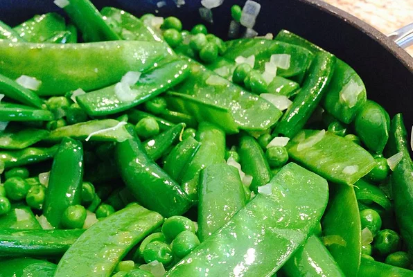

Spring Pea Medly with Edible Bowl

Description
Ingredients
- 2 tablespoons butter
- 1 small sweet onion, diced
- 1 cup fresh shelled green peas
- 1/2 cup low sodium, low fat vegetable broth
- 1/2 pound sugar snap peas, trimmed
- 1/2 pound snow peas, trimmed
- 1 tablespoons chopped fresh parsley
- salt and pepper
- 1 medium head radicchio
Steps
- In a medium skillet, melt the butter over medium low heat. Add
the onion and saute until transparent, about 5 minutes. Stir in
the green peas and the broth, and cook for about 3 minutes. Add
the snap peas, snow peas and parsley, and season to taste with
salt and pepper. Cook, covered, for about 3 more minutes.
- Remove the inner leaves from the radicchio and spread the outer
leaves out to make a bowl. Fill the hollow with the pea mixture
and garnish with additional Italian parsley.